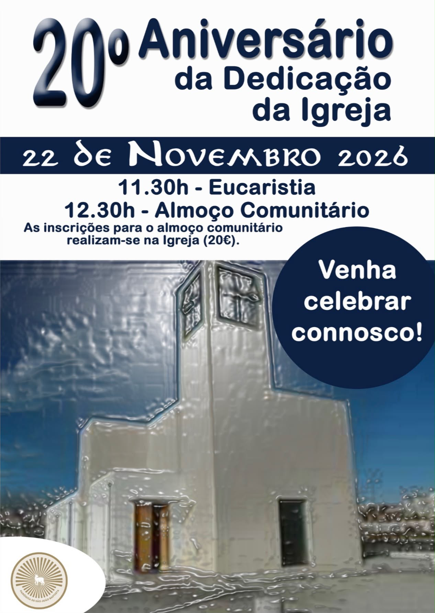
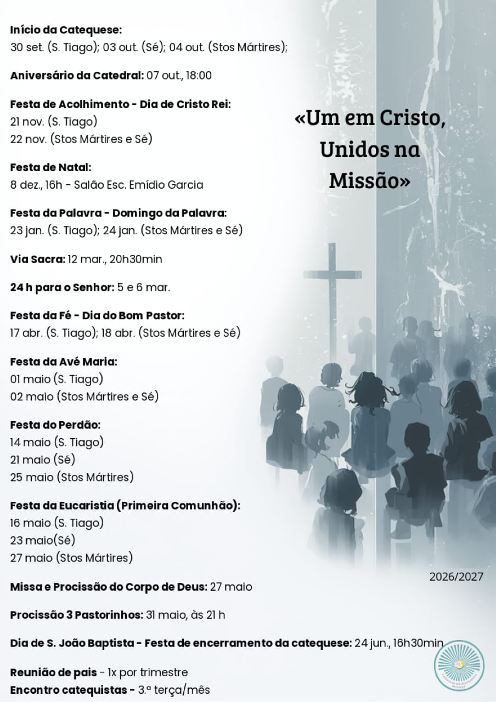
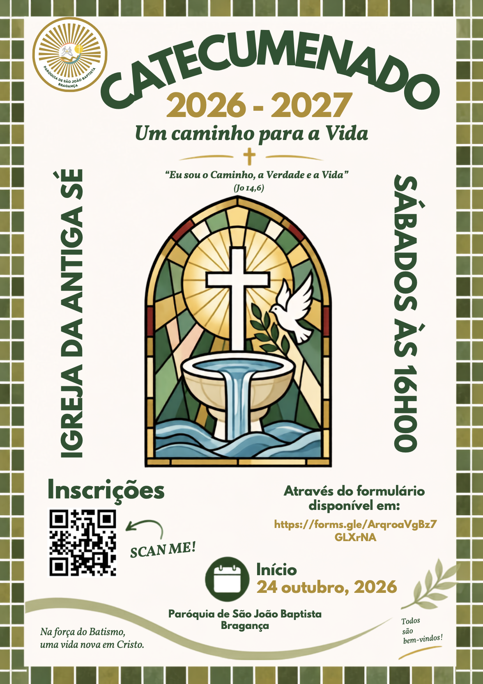

22 de novembro de 2026
20º Aniversário da Dedicação da Igreja
Eucaristia às 11h30, seguida de almoço comunitário (inscrições na Igreja, 20€).
Ler mais
15 de novembro de 2026
Dia Mundial dos Pobres
Neste domingo, 15 de novembro, celebramos o Dia Mundial dos Pobres, um convite a olhar para os nossos irmãos mais necessitados com os olhos e o coração de Cristo.
Ler mais
15 de novembro de 2026
Canal da Paróquia no WhatsApp
Temos uma novidade especial: a Paróquia de São João Baptista, em Bragança, tem um Canal oficial no WhatsApp!
Ler mais
15 de outubro de 2026
JMJ 2027 - Reunião de Esclarecimentos
Vamos juntos à Seul em 2027? Participa da reunião de esclarecimentos!
Ler mais
14 de outubro de 2026
Calendário da catequese 2026/2027
As atividades da catequese para o ano 2026/2027 podem ser conferidas no calendário disponibilizado!
Ler mais
6 de outubro de 2026
Inscrições abertas para o catecumenado!
Estão abertas as inscrições para o catecumenado!
Ler mais